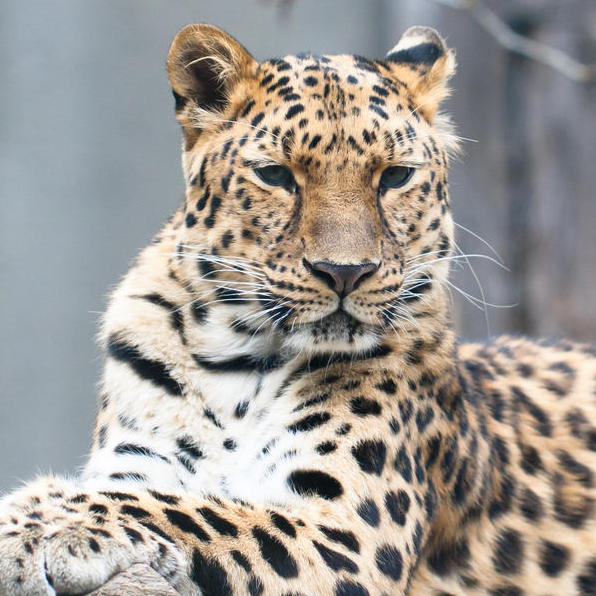
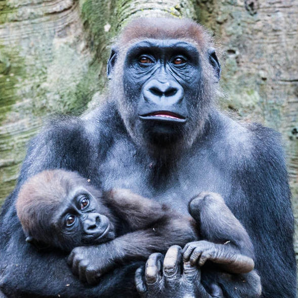
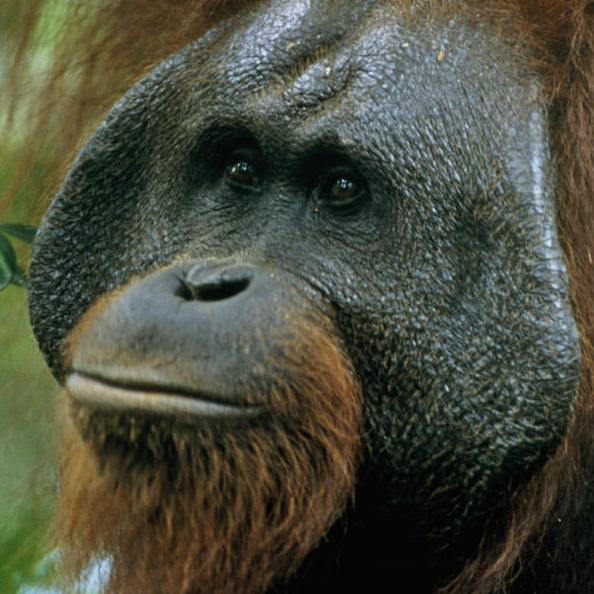
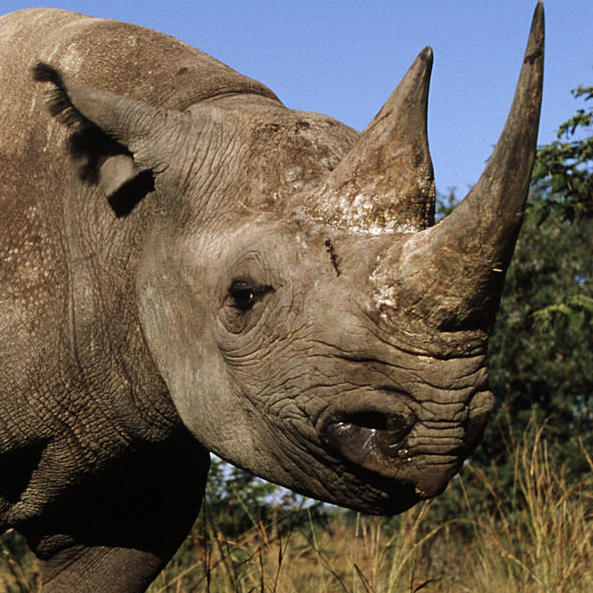

Worlds most endangered species
Amur Leopard
People usually think of leopards in the savannas of Africa but in the Russian Far East, a rare subspecies has adapted to life in the temperate forests that make up the northern-most part of the species’ range. Similar to other leopards, the Amur leopard can run at speeds of up to 37 miles per hour. This incredible animal has been reported to leap more than 19 feet horizontally and up to 10 feet vertically.
The Amur leopard is solitary. Nimble-footed and strong, it carries and hides unfinished kills so that they are not taken by other predators. It has been reported that some males stay with females after mating, and may even help with rearing the young. Several males sometimes follow and fight over a female. They live for 10-15 years, and in captivity up to 20 years. The Amur leopard is also known as the Far East leopard, the Manchurian leopard or the Korean leopard.
Cross River Gorilla
This subspecies of the western gorilla is very similar in appearance to the more numerous western lowland gorilla, but subtle differences can be found in the skull and tooth dimensions. Cross River gorillas live in a region populated by many humans who have encroached upon the gorilla’s territory—clearing forests for timber and to create fields for agriculture and livestock. Poaching occurs in the forests as well, and the loss of even a few of these gorillas has a detrimental effect on such a small population.
Efforts to protect these animals are focused on securing the forests that house them. WWF and partners have worked with the governments of Cameroon and Nigeria to create a protected area for the Cross River gorilla that spans the border of these two nations.
Bornean Orangutan
Bornean orangutan populations have declined by more than 50% over the past 60 years, and the species' habitat has been reduced by at least 55% over the past 20 years.
The Bornean orangutan differs in appearance from the Sumatran orangutan, with a broader face and shorter beard and also slightly darker in color. Three subspecies are recognized, each localized to different parts of the island:
- Northwest Bornean orangutans are the most threatened subspecies. Its habitat has been seriously affected by logging and hunting, and a mere 1,500 individuals or so remain. Many habitat patches in the area are small and fragmented.
- Northeast Bornean orangutans are the smallest in size and found in Sabah and eastern Kalimantan as far as the Mahakam River.
- Central Bornean orangutans are the subspecies with the most animals, with at least 35,000 individuals.
Black Rhino
Black rhinos are the smaller of the two African rhino species. The most notable difference between white and black rhinos are their hooked upper lip. This distinguishes them from the white rhino, which has a square lip. Black rhinos are browsers rather than grazers, and their pointed lip helps them feed on leaves from bushes and trees. They have two horns, and occasionally a third, small posterior horn.
Populations of black rhino declined dramatically in the 20th century at the hands of European hunters and settlers. Between 1960 and 1995, black rhino numbers dropped by a sobering 98%, to less than 2,500. Since then, the species has made a tremendous comeback from the brink of extinction. Thanks to persistent conservation efforts across Africa, black rhino numbers have doubled from their historic low 20 years ago to around 5,600 today. However, the black rhino is still considered critically endangered, and a lot of work remains to bring the numbers up to even a fraction of what it once was—and to ensure that it stays there. Wildlife crime—in this case, poaching and black-market trafficking of rhino horn—continues to plague the species and threaten its recovery.
Sunda Tiger
Sunda tigers are distinguished by heavy black stripes on their orange coats. The last of the Sunda island tigers—estimated to be fewer than 400 today—are holding on for survival in the remaining patches of forest on the island of Sumatra. Accelerating deforestation and rampant poaching mean this noble creature could end up extinct like its Javan and Balinese counterparts.

In Indonesia, anyone caught hunting tigers could face jail time and steep fines. But despite increased efforts in tiger conservation—including strengthening law enforcement and antipoaching capacity—a substantial market remains in Sumatra and other parts of Asia for tiger parts and products. Sunda tigers are losing their habitat and prey fast, and poaching is an ever-present threat.